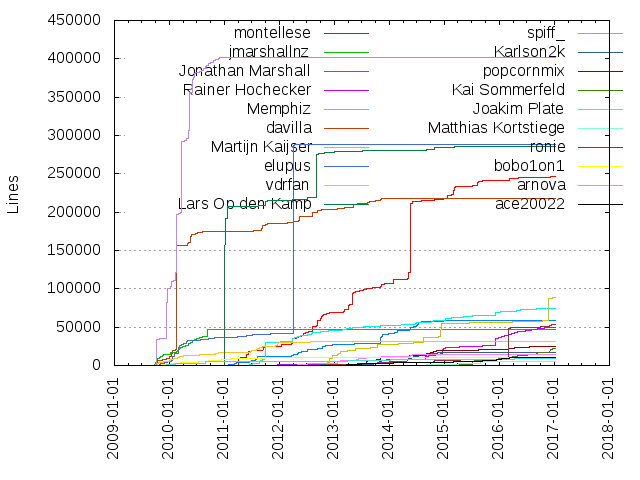
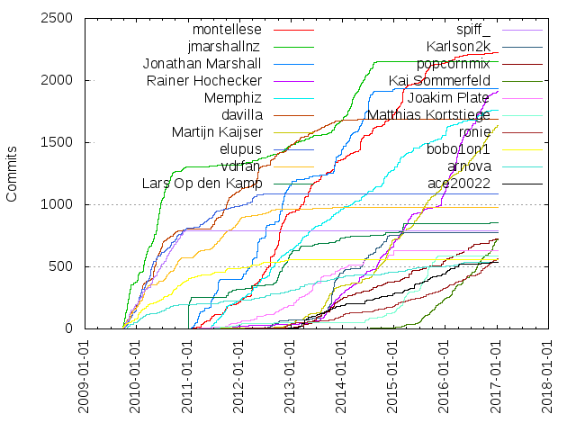

Authors
| Author | Commits (%) | + lines | - lines | First commit | Last commit | Age | Active days | # by commits |
|---|
| montellese | 2222 (5.18%) | 246127 | 972451 | 2010-12-29 | 2016-12-02 | 2164 days, 22:43:51 | 803 | 1 |
| jmarshallnz | 2153 (5.01%) | 47511 | 32451 | 2009-09-23 | 2014-09-07 | 1809 days, 21:15:27 | 616 | 2 |
| Jonathan Marshall | 1936 (4.51%) | 58399 | 58474 | 2011-01-15 | 2014-08-11 | 1304 days, 5:48:07 | 426 | 3 |
| Rainer Hochecker | 1916 (4.46%) | 49036 | 621952 | 2011-06-09 | 2017-01-06 | 2037 days, 23:20:59 | 783 | 4 |
| Memphiz | 1764 (4.11%) | 74107 | 41993 | 2011-05-23 | 2017-01-03 | 2052 days, 8:22:59 | 760 | 5 |
| davilla | 1691 (3.94%) | 217774 | 534038 | 2009-09-23 | 2014-09-04 | 1806 days, 23:44:00 | 590 | 6 |
| Martijn Kaijser | 1637 (3.81%) | 89117 | 38919 | 2011-07-13 | 2017-01-06 | 2004 days, 7:16:26 | 650 | 7 |
| elupus | 1088 (2.53%) | 288746 | 295306 | 2009-09-30 | 2013-07-26 | 1395 days, 14:22:33 | 311 | 8 |
| vdrfan | 978 (2.28%) | 30856 | 61035 | 2009-09-25 | 2014-06-06 | 1714 days, 20:43:10 | 423 | 9 |
| Lars Op den Kamp | 858 (2.00%) | 285890 | 219434 | 2010-10-16 | 2017-01-04 | 2271 days, 22:17:37 | 245 | 10 |
| spiff_ | 792 (1.84%) | 402345 | 306303 | 2009-09-26 | 2011-01-02 | 463 days, 18:16:26 | 228 | 11 |
| Karlson2k | 777 (1.81%) | 16707 | 212100 | 2012-07-02 | 2015-04-07 | 1009 days, 0:24:49 | 266 | 12 |
| popcornmix | 722 (1.68%) | 24747 | 22006 | 2012-09-10 | 2016-12-19 | 1561 days, 5:30:14 | 412 | 13 |
| Kai Sommerfeld | 721 (1.68%) | 22455 | 14395 | 2014-03-07 | 2017-01-04 | 1034 days, 15:23:05 | 342 | 14 |
| Joakim Plate | 627 (1.46%) | 14601 | 10148 | 2011-03-08 | 2014-11-23 | 1355 days, 22:15:36 | 246 | 15 |
| Matthias Kortstiege | 590 (1.37%) | 5376 | 36579 | 2011-06-14 | 2015-12-28 | 1657 days, 22:52:36 | 242 | 16 |
| ronie | 565 (1.32%) | 53102 | 32242 | 2011-12-02 | 2017-01-05 | 1861 days, 10:28:03 | 340 | 17 |
| bobo1on1 | 560 (1.30%) | 10886 | 6125 | 2009-09-23 | 2013-10-09 | 1476 days, 5:42:31 | 263 | 18 |
| arnova | 534 (1.24%) | 8619 | 12196 | 2009-09-29 | 2016-10-25 | 2583 days, 13:57:39 | 332 | 19 |
| ace20022 | 533 (1.24%) | 10340 | 301135 | 2012-08-31 | 2016-11-09 | 1531 days, 6:49:29 | 258 | 20 |
These didn't make it to the top: wiso, WiSo, Arne Morten Kvarving, jenkins4kodi, S. Davilla, Thomas Amland, spiff, fritsch, xhaggi, Christian Fetzer, lcapriotti, Sascha Montellese, Jim Carroll, Cory Fields, Chris "Koying" Browet, Garrett Brown, pieh, theuni, Jezz_X, ceros7, CrystalPT, wsnipex, taxigps, jezz_x, Pär Björklund, topfs2, CrystalP, Anton Fedchin, Tobias Arrskog, wsoltys, Alwin Esch, Trent Nelson, Kyle Hill, ulion, althekiller, Sam Stenvall, amet, gimli, John Rennie, huceke, phil65, Stefan Saraev, Peter Frühberger, alanwww1, h.udo, Voyager1, Andres Mejia, dteirney, Anssi Hannula, Wolfgang Schupp, tamland, xbmc, Chris Browet, alcoheca, anssih, Sascha Woo, Alasdair Campbell, Alexis Ballier, Fneufneu, blinkseb, Andreas Zelend, Max Kellermann, txtranslation, da-anda, uNiversaI, David Teirney, gnif2, phate89, DaveTBlake, Kolja Lampe, charlydoes, Razzeee, Philipp Temminghoff, Damian Huckle, blittan, BigNoid, AlwinEsch, Matus Kral, night199uk, malard, Tobias Markus, monkeyman_67156, Dave Blake, firnsy, beenje, Stephan Raue, Cristiano A. Silva, Chris "koying" Browet, alanwww1 (Attila), Ben Avison, AlTheKiller, mapfau, Geoffrey McRae, wattazoum, anaconda, MaestroDD, ametovic, unknown, Martin van Beurden, Martin Ellis, Chris Roberts, Sam Spilsbury, malloc64, metaron, motd2k, Daniel Scheller, nadasb, Rechi, Franz Koch, Lauri Myllari, maestrodd, gyunaev, Memphis, Markus Pfau, Fice, hudokkow, Sébastien Brochet, Tolriq, Chris Lance, AchimTuran, notspiff, jimfcarroll, Voyager-xbmc, MilhouseVH, Montellese, Achim Turan, renniej, janbar, Phaeodaria, Marcel Groothuis, Rawk, Glenn-1990, Chris Gilbert, Bernd Kuhls, Zeljko Ametovic, Philipp Te, Michal Piechowiak, Lee Pollock, Jonas Karlman, Frank Razenberg, FernetMenta, NedScott, George Yunaev, Chris Koying Browet, Bl4ck09, moby-uk, Vladlen Y. Koshelev, Tobias Hieta, Jeff Dorman, Deniz Türkoglu, David Robins, CutSickAss, Balint Reczey, t-nelson, queeup, un1versal, mad-max, a11599, Ryan Gribble, Markus Härer, M. Kaijser, Linus Yang, smallint, modhack2, ksooo, Jernej Fijačko, Harald Axmann, t4.ravenbird, stupid-boy, mcgeagh, alwinus, Stanislav Vlasic, Ned Scott, LeechGuy, Joakim, Joachim Breuer, wiromare, Violet Red, Olaf Hering, Kib, HitcherUK, Alex Deryskyba, yuvalt, jjd-uk, hippojay, evilhamster, Tadej Novak, Max Auer, MartijnKaijser, LS80, Kevin Goffe, Joel Holdsworth, FlyingRat, Dimitris Kazakos, Chris \"Koying\" Browet, Brandon McAnsh, xbmcapi, wolfgar, sportica, sphere, mikkle, kszaq, Razzee, Mike, Harry Muscle, David Härdeman, BFG, rehnman, isidrogar, groth-its, enen92, crystalpt, Stephan Diederich, Sascha Kuehndel (InuSasha), Paul Menzel, Marius T, Maks Naumov, Lukas Rusak, Jonathan Lane, Jezz, Glenn Maynard, David Soms, CrHasher, BtbN, Bas Rieter, Andy Maloney, universal, ruuk, nuka1195, fernetmenta, fape, f3k, classicspam, Søren Juul, Shine, Nuno Senica, IronTetsubo, Dmitry Blokhin, Curtis Bevan, Craig Andrews, Chris koying Browet, Brandon Schaefer, Alexandre Maloteaux, ydatografida, viking1, viking, verybadsoldier, t4-ravenbird, robwebset, readmanr, psyton, peak3d, ndogxj, menakite, foser, epoke, dragonflight, c0diq, asylumfunk, Stephan Hadamik, Stanisław Gackowski, Scott Johns, Scott D. Davilla, Michael Niedermayer, Micah Galizia, Martin Storsjö, John Smith, Jan Holthuis, Istvan Stikrad, Erwin Jansen, Eli K, Edgar Hucek, Daniel, Dag Wieers, Chris Mayo, Andriy Prystupa, Alfredo Tupone, yanniks, skylex, phi2039, perpe, macrule, joethefox, jdembski, fightnight, chadoe, bryanbrazil, babca, avdleeuw, Tarulia, Sam Nazarko, Rafał Chwiała, Paxxi, Patrick Rasmussen, Oleg Oshmyan, Oldnemesis, Nigel Jones, NHellFire, Miroslav Šmerda, Mike Frysinger, Mike C, Michael Cronenworth, Menno, Mateusz Lewicki, Martin Brodbeck, Maarten Bezemer, LucasG2000, Koen Kooi, Jörg Dembski, Josh Soref, John Stebbins, JezzX, Hendrik v. Raven, GreenOnyx, Glenn, Evgeny Grin, Erik Kessler, DoraXBMC, Cyril, Andrei G, waven, tiben20, siriuzwhite, sfontes, rwparris2, romanvm, orewagundam, mrc1876, mossywell, mizaki, mikeyd, lambda81, koalahong, jun.jiang, hudo, hmis, guyrichie, dsoms, drmonty, dominik-th, diego nunes, dhead666, dezi, dez-dk, chewitt, bossanova808, blackpilot24, asavah, Wolfgang Haupt, Vladimir Zahradnik, Valentin Grouès, Ulion, Tony Phillips, Tomas Melin, Thomas Deblock, Simon Vetter, ShaLi Shaltiel, Schischu, Ryan Rector, Roman Kraevskiy, Rafal Wojcik, Peter Fern, Peter Bauer, Paul Novotny, OV3RDOSE, Nick Little, Millencolin, Michał Piechowiak, Michał Kępień, Michael Wehr, Michael McGeagh, Matthias Gehre, Mariusz Bialonczyk, Marius Bakke, Leonidas Kosmidis, Karl Rixon, Jonathan Fabian, Jonatan Antoni, Jonas Jonsson, Jim, Jay Kominek, Javier Marcet, Immanuel Klinkenberg, Hubert Miś, Hofi, Hendrik Leppkes, Giftie, Georgi Chorbadzhiyski, GeminiServer, Frederik Slos, Floris Bos, Felix Marx, Felix Groth, Fabien Ménager, Fabian Ockenfels, Dusan Slijepcevic, Dominic Clifton, Denis Yantarev, David Brownlee, Dak0ta, Chris Boot, Carcharius, Brendan Le Foll, Bob van Loosen, Big_Noid, Avik Sil, Attila Jakosa, Artem Glebov, Andrew Fyfe, 1977David, xconverge, vanosg, unfledged, twinther, tutifrutas, tslayer, thebandit, the-hydra, terry, tavoc, sub9, stuart, stickell, stevegal, spudwebb, slash2009, skyblaster, sialivi, sensite, rubpa, robinbijlani, rjsachse, raptorjr, qwerdy, podtalje, pitpompej, pete, perexis, oskvadd, oldnemesis, of the universe, odon, norbini, neoflex, mvdroest, mrhipp, mrdominuzq, milesbenson, mike, midripps, mgehre, mbjarnas, manuel, maheus, louis89, lookup69, linusyang, lars-a, kit500, killdash9, kiler129, kenji123, kekePower, keith, kajdreef, jowadmax, jenkins4xbmc, jenkins101, iroot, htpc, hrotkogabor, host505, hjcai, hawkeyexp, hacke78, graysky, gokl, glenvt18, frace, foo86, fastcolors, fabio81, erwan, epideme, elmerohueso, elisemory, donj_, dhacker29, darkdonno, danips, dadosch, colfax4, chr-b, chocolateboy, cgtobi, cfetzer, c3n, bombizombi, bluefoxlee, blezalex, balmeras, b-pass, an, amediauser, alex, Zoltan Csizmadia, Zapata11, Yuriy Romanenko, Yoav Farhi, Yang Huang, Yair Schwartz, Xavier Landreville, XBMCSPAIN, Waven, Vegar Storvann, Vadim Malenboim, Uukrull, Torsten Kurbad, Tonny Petersen, Tomi Harjunmaa, Tomas Chvatal, Tom Vijlbrief, Tom Samstag, Timo Gurr, Timemachine, Tim Thomas, Thomas, ThiasDE, Thias, Terry Hardie, Tempura San, Taeyeon Mori, S�bastien, Sylvain Rebaud, Stijn Tintel, Stewart Gebbie, Stein-Ivar Berghei, Stefan Bogner, SpiritOffice, SkyCrawl, Skixbmc, Simon Frei, Shai Bentin, Shafiq Jetha, Serge Schneider, Sebastian Brückner, Sean Kelly, Scott Davilla, Ryan Saunders, Rudi, Rowan Border, Ross Stutterheim, Roman Miroshnychenko, Roman, Roland Sommer, Robert Meijers, Robert Cooper, Rififi77, Ricardo Salveti de Araujo, Riaas Mokiem, Red-F, Ramiro Morales, Rah85, Rafał Wójcik, Rafał Krypa, Pierre-Étienne Messier, Pierre Ossman, Pierre Bureau, Philipp Felix Hoefler, Philip Langdale, Peter Ross, Pete Beardmore, Pedrock, Paul Kendall, Pascal Patry, PartialGestalt, Pablo Molina, Ohad Benjamin, Nikolai Rusakov, Nicolas George, Nicolas Adenis-Lamarre, Nick Leppänen Larsson, Neal, Nathan, Natanael Copa, NEOhidra, Mitchell Cash, Miroslav Bambousek, Mikel Azkolain, Mike Roberts, Mettbrot, Maxwellito, Max Shakhmetov, Marton Balint, Martin T. H. Sandsmark, Mariusz Brzeski, Mariusz Białończyk, Mario Holzinger, Marcus Wanner, Marcel Ebmer, Malard, Luis Fernandes, Louis DaPrato, Leonard Harms, Kuci, KeyserSoze1, Kevin Mihelich, Kevin Cheng, Kenney Phillis, KenV99, Ken Dreyer, Juan Font, Joseph A. Yasi, Jose Quinteiro, JoostK, Jools Wills, Jonathan Dray, Jonathan Dieter, Jon Frydensbjerg, Jojjec1, JoethePartylion, Joel Teichroeb, Jian Wang, Jess Haas, Jernej, Jenkins, Jean-Philippe Lord, Jason Lewis, Jason Clark, Janne Grunau, Jan Wagner-Rosenkranz, Jamie Coldhill, James Laird, JPSDR, Hugo Rodenburg, Hollow011, Hedda, Grégory Coutant, Grigori Goronzy, Gordon Ellis, Friðrik Ásmundsson, Fredrik Wendel, Fred Hoogduin, Florian Diemer, Fernando Carmona Varo, Fernando, Felix Bünemann, Erik van Pienbroek, Erik, Enric Soler Rastrollo, Emanuele Canessa, Dr-Romantic, Doug Pirie, Dom Cobley, Doktor-X, Dmitry Sandalov, Diego Biurrun, Dennis Ebben, David Butler, David Baucum, David Banham, Dave Bendit, Danny3, Danilo Krummrich, Danijel Posilovic, Daniel Radtke, Daniel Forsberg, Daniel Burr, Daniel Alfredsson, Dani, Damien Thébault, Dale Stammen, Colin Guthrie, Cole Johnson, Christopher Lance, Christian Eikermann, Christian Ebbesen, Chris \\\"Koying\\\" Browet, Charlie Marshall, Chaitanya Talnikar, Chainfire, Cam Hutchison, Bryan, BluTuTh, BlackEagle, Ben Kibbey, Avdienko Mikhail, Arno, Anuj Mittal, Anton Khirnov, Anthony Ryan, Andrius, Andrew Gallatin, Andreas Auras, AndersD, Allan Kristensen, Alex Wilkinson, Alex Ling, Aleks Rozman, Alcaro, Aki Lehtinen, Adrian Moennich, Adam Sutton, Adam Reeve, Aaron Drysdale, Aardvark
Only top 20 authors shown
Only top 20 authors shown
| Month | Author | Commits (%) | Next top 5 | Number of authors |
|---|
| 2017-01 | ronie | 9 (12.86% of 70) | Rainer Hochecker, Martijn Kaijser, Christian Fetzer, Kai Sommerfeld, jenkins4kodi | 28 |
| 2016-12 | Alwin Esch | 61 (13.99% of 436) | Kai Sommerfeld, Martijn Kaijser, Christian Fetzer, jenkins4kodi, Garrett Brown | 48 |
| 2016-11 | Kai Sommerfeld | 43 (11.50% of 374) | Garrett Brown, Martijn Kaijser, Christian Fetzer, ronie, Rainer Hochecker | 50 |
| 2016-10 | Rainer Hochecker | 71 (13.50% of 526) | Martijn Kaijser, Chris "Koying" Browet, ronie, Garrett Brown, Kai Sommerfeld | 55 |
| 2016-09 | Rainer Hochecker | 66 (12.82% of 515) | Martijn Kaijser, Kai Sommerfeld, ronie, Christian Fetzer, phil65 | 52 |
| 2016-08 | Kai Sommerfeld | 81 (18.12% of 447) | Rainer Hochecker, Garrett Brown, Martijn Kaijser, Memphiz, Thomas Amland | 45 |
| 2016-07 | Rainer Hochecker | 56 (14.07% of 398) | Christian Fetzer, Martijn Kaijser, Kai Sommerfeld, Thomas Amland, Pär Björklund | 46 |
| 2016-06 | Rainer Hochecker | 38 (10.89% of 349) | Martijn Kaijser, Kai Sommerfeld, phate89, Stefan Saraev, popcornmix | 45 |
| 2016-05 | Rainer Hochecker | 54 (11.79% of 458) | Kai Sommerfeld, Martijn Kaijser, ronie, Alwin Esch, popcornmix | 48 |
| 2016-04 | Rainer Hochecker | 99 (16.81% of 589) | Thomas Amland, Max Kellermann, Martijn Kaijser, Garrett Brown, phil65 | 59 |
| 2016-03 | Rainer Hochecker | 135 (20.58% of 656) | Max Kellermann, Kai Sommerfeld, Christian Fetzer, Thomas Amland, Alwin Esch | 59 |
| 2016-02 | Rainer Hochecker | 54 (10.36% of 521) | Christian Fetzer, Kai Sommerfeld, Martijn Kaijser, montellese, Thomas Amland | 55 |
| 2016-01 | Rainer Hochecker | 107 (20.54% of 521) | ace20022, Thomas Amland, Memphiz, Kai Sommerfeld, Martijn Kaijser | 58 |
| 2015-12 | Rainer Hochecker | 85 (14.89% of 571) | Martijn Kaijser, Memphiz, Kai Sommerfeld, jenkins4kodi, fritsch | 66 |
| 2015-11 | Martijn Kaijser | 28 (9.06% of 309) | Kai Sommerfeld, Rainer Hochecker, Memphiz, Matthias Kortstiege, Thomas Amland | 52 |
| 2015-10 | Matthias Kortstiege | 52 (13.90% of 374) | Kai Sommerfeld, Martijn Kaijser, Rainer Hochecker, wsnipex, ronie | 57 |
| 2015-09 | Matthias Kortstiege | 53 (9.55% of 555) | Martijn Kaijser, Kai Sommerfeld, Alwin Esch, Memphiz, montellese | 61 |
| 2015-08 | Matthias Kortstiege | 83 (17.70% of 469) | Martijn Kaijser, montellese, Thomas Amland, Anton Fedchin, jenkins4kodi | 48 |
| 2015-07 | Matthias Kortstiege | 66 (11.66% of 566) | Martijn Kaijser, Kai Sommerfeld, montellese, xhaggi, Pär Björklund | 50 |
| 2015-06 | Martijn Kaijser | 36 (13.90% of 259) | Sam Stenvall, jenkins4kodi, Chris "Koying" Browet, xhaggi, Anton Fedchin | 49 |
| 2015-05 | Martijn Kaijser | 57 (13.83% of 412) | Memphiz, Rainer Hochecker, Arne Morten Kvarving, popcornmix, jenkins4kodi | 56 |
| 2015-04 | Rainer Hochecker | 55 (11.96% of 460) | popcornmix, ace20022, Matthias Kortstiege, Anton Fedchin, jenkins4kodi | 51 |
| 2015-03 | Matthias Kortstiege | 72 (10.45% of 689) | montellese, Lars Op den Kamp, Rainer Hochecker, Martijn Kaijser, xhaggi | 67 |
| 2015-02 | montellese | 75 (13.35% of 562) | Rainer Hochecker, Memphiz, jenkins4kodi, Matthias Kortstiege, AlwinEsch | 66 |
| 2015-01 | montellese | 65 (14.16% of 459) | Memphiz, Rainer Hochecker, Matthias Kortstiege, Sam Stenvall, jenkins4kodi | 61 |
| 2014-12 | Martijn Kaijser | 68 (15.42% of 441) | Rainer Hochecker, montellese, Tobias Markus, h.udo, jenkins4kodi | 57 |
| 2014-11 | Martijn Kaijser | 100 (15.82% of 632) | Joakim Plate, Tobias Arrskog, montellese, Memphiz, Rainer Hochecker | 47 |
| 2014-10 | Memphiz | 54 (12.19% of 443) | montellese, Tobias Arrskog, Martijn Kaijser, Karlson2k, Rainer Hochecker | 47 |
| 2014-09 | Rainer Hochecker | 79 (24.53% of 322) | Martijn Kaijser, Memphiz, xhaggi, wsnipex, ace20022 | 47 |
| 2014-08 | Martijn Kaijser | 54 (11.66% of 463) | jmarshallnz, montellese, Memphiz, Karlson2k, Jonathan Marshall | 56 |
| 2014-07 | Jonathan Marshall | 82 (19.03% of 431) | Karlson2k, jmarshallnz, xhaggi, montellese, Memphiz | 45 |
| 2014-06 | Jonathan Marshall | 75 (16.27% of 461) | Arne Morten Kvarving, jmarshallnz, Karlson2k, Memphiz, Rainer Hochecker | 39 |
| 2014-05 | Jonathan Marshall | 88 (17.19% of 512) | jmarshallnz, Karlson2k, montellese, Rainer Hochecker, Memphiz | 52 |
| 2014-04 | Jonathan Marshall | 57 (18.10% of 315) | jmarshallnz, Trent Nelson, Rainer Hochecker, popcornmix, Chris "Koying" Browet | 46 |
| 2014-03 | jmarshallnz | 99 (22.05% of 449) | montellese, Jonathan Marshall, Rainer Hochecker, Memphiz, Trent Nelson | 50 |
| 2014-02 | jmarshallnz | 72 (17.14% of 420) | Jonathan Marshall, Trent Nelson, montellese, Rainer Hochecker, fritsch | 50 |
| 2014-01 | Jonathan Marshall | 39 (8.14% of 479) | Rainer Hochecker, Karlson2k, jmarshallnz, montellese, fritsch | 56 |
| 2013-12 | Jonathan Marshall | 44 (8.94% of 492) | Rainer Hochecker, jmarshallnz, Memphiz, popcornmix, Karlson2k | 61 |
| 2013-11 | Jonathan Marshall | 87 (12.55% of 693) | Karlson2k, jmarshallnz, montellese, popcornmix, Rainer Hochecker | 59 |
| 2013-10 | Karlson2k | 92 (15.18% of 606) | Jonathan Marshall, Rainer Hochecker, montellese, Memphiz, Martijn Kaijser | 53 |
| 2013-09 | Martijn Kaijser | 75 (14.88% of 504) | Karlson2k, Rainer Hochecker, Memphiz, montellese, popcornmix | 62 |
| 2013-08 | Karlson2k | 85 (13.84% of 614) | Martijn Kaijser, Rainer Hochecker, Memphiz, popcornmix, montellese | 68 |
| 2013-07 | Alexis Ballier | 41 (11.61% of 353) | montellese, davilla, popcornmix, huceke, Voyager1 | 57 |
| 2013-06 | Joakim Plate | 59 (15.05% of 392) | popcornmix, montellese, davilla, Memphiz, jmarshallnz | 54 |
| 2013-05 | montellese | 64 (11.19% of 572) | Cory Fields, Joakim Plate, Memphiz, ace20022, ulion | 50 |
| 2013-04 | montellese | 56 (10.81% of 518) | ulion, Arne Morten Kvarving, Martijn Kaijser, Joakim Plate, ace20022 | 73 |
| 2013-03 | ulion | 55 (10.56% of 521) | ace20022, Memphiz, Cory Fields, montellese, Lars Op den Kamp | 57 |
| 2013-02 | ulion | 41 (10.30% of 398) | montellese, Memphiz, Joakim Plate, jmarshallnz, davilla | 51 |
| 2013-01 | Jonathan Marshall | 33 (11.38% of 290) | davilla, Memphiz, Martijn Kaijser, Lars Op den Kamp, ulion | 52 |
| 2012-12 | Lars Op den Kamp | 83 (15.84% of 524) | Jonathan Marshall, davilla, montellese, gimli, Cory Fields | 53 |
| 2012-11 | Jonathan Marshall | 98 (18.85% of 520) | montellese, Lars Op den Kamp, jmarshallnz, Memphiz, Arne Morten Kvarving | 59 |
| 2012-10 | Jonathan Marshall | 137 (15.77% of 869) | montellese, Lars Op den Kamp, Alasdair Campbell, spiff, Memphiz | 69 |
| 2012-09 | Kyle Hill | 116 (14.55% of 797) | montellese, Lars Op den Kamp, Jim Carroll, Memphiz, davilla | 72 |
| 2012-08 | montellese | 58 (10.86% of 534) | gimli, Memphiz, Kyle Hill, Karlson2k, davilla | 50 |
| 2012-07 | montellese | 67 (11.82% of 567) | Jonathan Marshall, Andres Mejia, Cory Fields, Memphiz, WiSo | 60 |
| 2012-06 | montellese | 82 (19.03% of 431) | David Teirney, Andres Mejia, Memphiz, Jonathan Marshall, theuni | 46 |
| 2012-05 | davilla | 128 (19.28% of 664) | Jonathan Marshall, Memphiz, montellese, alanwww1, theuni | 54 |
| 2012-04 | Jonathan Marshall | 40 (11.73% of 341) | Geoffrey McRae, Memphiz, elupus, montellese, Jezz_X | 55 |
| 2012-03 | Jonathan Marshall | 53 (13.42% of 395) | Jezz_X, Memphiz, CrystalP, montellese, elupus | 61 |
| 2012-02 | Jonathan Marshall | 85 (26.40% of 322) | Memphiz, montellese, alanwww1 (Attila), davilla, elupus | 54 |
| 2012-01 | Jonathan Marshall | 47 (12.40% of 379) | montellese, vdrfan, WiSo, Memphiz, CrystalP | 47 |
| 2011-12 | vdrfan | 51 (19.39% of 263) | montellese, davilla, CrystalP, Memphiz, Matthias Kortstiege | 42 |
| 2011-11 | spiff | 31 (12.70% of 244) | davilla, vdrfan, montellese, Memphiz, Lars Op den Kamp | 32 |
| 2011-10 | davilla | 75 (16.67% of 450) | montellese, Lars Op den Kamp, Memphiz, CrystalP, spiff | 51 |
| 2011-09 | davilla | 75 (14.68% of 511) | montellese, CrystalP, Memphiz, vdrfan, pieh | 51 |
| 2011-08 | pieh | 67 (16.14% of 415) | Jonathan Marshall, Memphiz, vdrfan, davilla, spiff | 48 |
| 2011-07 | Jonathan Marshall | 71 (14.31% of 496) | davilla, vdrfan, Memphiz, Jim Carroll, elupus | 53 |
| 2011-06 | Jonathan Marshall | 93 (16.73% of 556) | montellese, Jim Carroll, davilla, Memphiz, WiSo | 52 |
| 2011-05 | Tobias Arrskog | 61 (15.89% of 384) | S. Davilla, John Rennie, Jezz_X, WiSo, elupus | 41 |
| 2011-04 | Jezz_X | 85 (21.63% of 393) | WiSo, S. Davilla, montellese, Jim Carroll, amet | 36 |
| 2011-03 | S. Davilla | 129 (30.21% of 427) | Jonathan Marshall, WiSo, elupus, vdrfan, spiff | 37 |
| 2011-02 | Jonathan Marshall | 58 (17.01% of 341) | Anssi Hannula, Fneufneu, vdrfan, WiSo, Jim Carroll | 34 |
| 2011-01 | Lars Op den Kamp | 250 (48.45% of 516) | spiff, CrystalP, WiSo, Jezz_X, bobo1on1 | 36 |
| 2010-12 | elupus | 20 (16.95% of 118) | bobo1on1, spiff, jmarshallnz, davilla, theuni | 21 |
| 2010-11 | spiff_ | 59 (20.27% of 291) | topfs2, elupus, bobo1on1, jmarshallnz, blinkseb | 26 |
| 2010-10 | vdrfan | 63 (14.69% of 429) | elupus, spiff_, dteirney, anssih, lcapriotti | 28 |
| 2010-09 | lcapriotti | 58 (11.81% of 491) | spiff_, jmarshallnz, bobo1on1, elupus, CrystalPT | 27 |
| 2010-08 | jmarshallnz | 76 (15.77% of 482) | spiff_, CrystalPT, vdrfan, ceros7, elupus | 25 |
| 2010-07 | jmarshallnz | 106 (17.82% of 595) | davilla, CrystalPT, anssih, wiso, vdrfan | 26 |
| 2010-06 | jmarshallnz | 168 (25.07% of 670) | davilla, CrystalPT, spiff_, wiso, jezz_x | 23 |
| 2010-05 | ceros7 | 153 (17.35% of 882) | jmarshallnz, davilla, jezz_x, elupus, CrystalPT | 25 |
| 2010-04 | elupus | 122 (22.51% of 542) | spiff_, jmarshallnz, davilla, topfs2, wiso | 23 |
| 2010-03 | jmarshallnz | 110 (19.71% of 558) | elupus, alcoheca, wiso, vdrfan, bobo1on1 | 27 |
| 2010-02 | jmarshallnz | 94 (13.68% of 687) | davilla, vdrfan, elupus, spiff_, gnif2 | 28 |
| 2010-01 | davilla | 101 (14.13% of 715) | elupus, jmarshallnz, bobo1on1, vdrfan, spiff_ | 31 |
| 2009-12 | wiso | 78 (13.04% of 598) | elupus, vdrfan, lcapriotti, spiff_, davilla | 31 |
| 2009-11 | jmarshallnz | 149 (20.08% of 742) | spiff_, elupus, davilla, vdrfan, lcapriotti | 27 |
| 2009-10 | jmarshallnz | 173 (22.21% of 779) | davilla, spiff_, vdrfan, topfs2, wiso | 30 |
| 2009-09 | jmarshallnz | 33 (22.30% of 148) | bobo1on1, AlTheKiller, taxigps, wiso, lcapriotti | 22 |
| Year | Author | Commits (%) | Next top 5 | Number of authors |
|---|
| 2017 | ronie | 9 (12.86% of 70) | Rainer Hochecker, Martijn Kaijser, Christian Fetzer, Kai Sommerfeld, jenkins4kodi | 28 |
| 2016 | Rainer Hochecker | 783 (13.52% of 5790) | Kai Sommerfeld, Martijn Kaijser, Christian Fetzer, ronie, Thomas Amland | 165 |
| 2015 | Martijn Kaijser | 463 (8.14% of 5685) | Matthias Kortstiege, Rainer Hochecker, montellese, Memphiz, jenkins4kodi | 204 |
| 2014 | Jonathan Marshall | 477 (8.89% of 5368) | jmarshallnz, montellese, Rainer Hochecker, Martijn Kaijser, Memphiz | 176 |
| 2013 | montellese | 416 (6.99% of 5953) | Karlson2k, Memphiz, Martijn Kaijser, Jonathan Marshall, Joakim Plate | 208 |
| 2012 | Jonathan Marshall | 761 (12.00% of 6343) | montellese, Memphiz, davilla, Lars Op den Kamp, Cory Fields | 221 |
| 2011 | Jonathan Marshall | 402 (8.05% of 4996) | Lars Op den Kamp, davilla, vdrfan, WiSo, S. Davilla | 155 |
| 2010 | jmarshallnz | 927 (14.35% of 6460) | elupus, davilla, spiff_, vdrfan, wiso | 51 |
| 2009 | jmarshallnz | 377 (16.63% of 2267) | spiff_, wiso, davilla, vdrfan, elupus | 42 |
| Domains | Total (%) |
|---|
| gmail.com | 9389 (21.87%) |
|---|
| svn | 8719 (20.31%) |
|---|
| xbmc.org | 7768 (18.09%) |
|---|
| online.de | 2096 (4.88%) |
|---|
| machzwo.de | 1793 (4.18%) |
|---|
| never.you.mind | 1267 (2.95%) |
|---|
| 4pi.com | 1207 (2.81%) |
|---|
| users.noreply.github.com | 1205 (2.81%) |
|---|
| narod.ru | 780 (1.82%) |
|---|
| gmx.com | 741 (1.73%) |
|---|